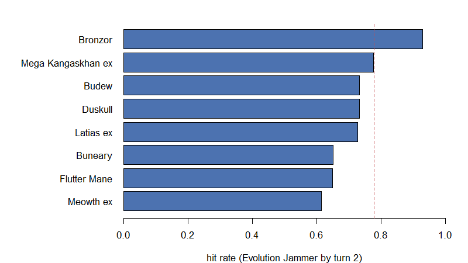

Kevin Z. Lin — 2026-08-29
This is a walkthrough of the simulator as it stands, built to be
argued with. The policy it runs — R/decision_claude.R — is
a first draft translation of
docs/03_decision_tree.md, written so the tree and
the code can be read side by side. It will make choices you disagree
with. Those disagreements are the output this document is for.
The question the whole thing answers: over many simulated games, how often can the player attack with Evolution Jammer on or before their own turn 2? One fixed bar, the same going first and going second (ADR 0004), reported separately for the two coin-flip branches and never pooled (ADR 0002).
| Stage | What it does | Functions |
|---|---|---|
| Setup | Shuffle, mulligan, place the Active, set prizes | setup_game(), policy_placement() |
| Turns 1–2 | Draw, then play the decision tree | policy_turn(), play_replicate() |
| Measure | One replicate → hit / miss, turn achieved, diagnosis | summarise_replicate() |
| Aggregate | Many replicates → one rate per cell | summarise_run() |
| Diagnose | A stratified sample of readable traces | write_trace_file() |
Two things the simulator is careful about, because both are easy to get silently wrong:
for(one_file in list.files("../R", pattern = "[.]R$", full.names = TRUE)){
source(one_file)
}
card_df <- build_card_database()
decklist <- read_decklist("../decklists/decklist2.txt", card_df)decklist2, chosen because it runs both
Salvatore and Latias ex — so the turn-1 kill line and the free-retreat
rung of the §4.3 ladder both get exercised.
count_vec <- decklist$count_vec
data.frame(count = as.integer(count_vec),
card = lookup_card(card_df, names(count_vec))$name,
row.names = NULL) count card
1 1 Budew
2 2 Night Stretcher
3 2 Mega Kangaskhan ex
4 2 Boss's Orders
5 4 Lillie's Determination
6 4 Rare Candy
7 3 Switch
8 4 Ultra Ball
9 2 Buneary
10 2 Mega Lopunny ex
11 1 Meowth ex
12 4 Poke Pad
13 4 Telepathic Psychic Energy
14 4 Duskull
15 2 Dusclops
16 4 Dusknoir
17 1 Latias ex
18 1 Enriching Energy
19 2 Bronzor
20 2 Bronzong
21 1 Flutter Mane
22 2 Ciphermaniac's Codebreaking
23 1 Salvatore
24 1 Jamming Tower
25 4 HildaThe four sub-goals that must all hold at the attack step, from §1 of the decision tree:
| Sub-goal | Satisfied by | |
|---|---|---|
| A | A Bronzor is in play | setup, Poké Pad, Ultra Ball, Brock’s Scouting, benching one |
| B | Bronzong is on it | Hilda, Salvatore, or drawn and evolved |
| C | Bronzong is Active | led at setup, free retreat, Switch, Surfer, Run Around, Cursed Blast |
| D | A [P] source is attached |
basic Psychic or Telepathic Psychic Energy |
The most useful part of this document. A single seed, going second, played turn by turn — every decision the policy takes is logged as it happens.
seed_number <- 8L
pair <- setup_game(decklist, card_df,
bool_going_first = FALSE,
placement_fn = policy_placement,
seed_number = seed_number)
print(paste0("opening hand: ",
paste0(lookup_card(card_df, pair$state$hand_vec)$name,
collapse = ", ")))
print(paste0("led: ", lookup_card(card_df, top_card(pair$state$active))$name))
print(paste0("bench: ", length(pair$state$bench_list), " Pokemon"))[1] "opening hand: Telepathic Psychic Energy, Salvatore, Telepathic Psychic Energy, Rare Candy, Rare Candy, Dusknoir"
[1] "led: Flutter Mane"
[1] "bench: 0 Pokemon"Note the empty Bench. §3 says to place the Active and stop: a benched Basic can never be un-benched, and the slots are wanted for Latias ex.
pair$state <- begin_turn(pair$state)
pair <- draw_to_hand(pair, num_cards = 1L)
pair <- policy_turn(pair)
writeLines(readable_log(pair$state, turn_number = 1L))attach TelepathicPsychicEnergy to FlutterMane
Telepathic Psychic Energy -> Bronzor(TEF), Latiasex
evolve into Bronzong
Salvatore -> Bronzong
promote Bronzong via retreat(free)pair$state <- begin_turn(pair$state)
pair <- draw_to_hand(pair, num_cards = 1L)
pair <- policy_turn(pair)
writeLines(readable_log(pair$state, turn_number = 2L))attach TelepathicPsychicEnergy to Bronzong
Telepathic Psychic Energy -> Duskull, Bronzor(TEF)
EVOLUTION JAMMERresult <- summarise_replicate(pair, decklist$decklist_id, seed_number,
bool_keep_trace = TRUE)
print(paste0("hit: ", result$bool_hit,
" turn achieved: ", result$jammer_turn))
writeLines(result$trace_vec)[1] "hit: TRUE turn achieved: 2"
#8 HIT t2
setup hand[RareCandy+RareCandy+TelepathicPsychicEnergy+TelepathicPsychicEnergy+Dusknoir+FlutterMane+Salvatore] | lead FlutterMane
T1 attach TelepathicPsychicEnergy to FlutterMane | Telepathic Psychic Energy -> Bronzor(TEF), Latiasex | evolve into Bronzong | Salvatore -> Bronzong | promote Bronzong via retreat(free)
T2 attach TelepathicPsychicEnergy to Bronzong | Telepathic Psychic Energy -> Duskull, Bronzor(TEF) | EVOLUTION JAMMER
end of turn 2 -- board state when the window closed; setup lead=FlutterMane
active Bronzor(TEF)>Bronzong[P]{TelepathicPsychicEnergy} played=T1 evo=T1
bench FlutterMane[P]{TelepathicPsychicEnergy} played=T0 | Latiasex[P] played=T1 | Duskull[P] played=T2 | Bronzor(TEF)[P] played=T2
hand RareCandy, RareCandy, Dusknoir, BosssOrders, Buneary
discard Salvatore
zones deck=40 prizes=6 stadium=-
turn energy=spent supporter=unplayed items=open
prized GROUND TRUTH, never visible to the policy (ADR 0003): Duskull, Budew, PokePad, Bronzong, NightStretcher, TelepathicPsychicEnergyThat block is what a trace looks like. end of turn 2 is
recorded in full (ADR 0007) because the board reached by turn 2 is a
question worth asking later, and the window stops there — there is no
turn 3 anywhere in the simulator.
Going first and going second are different games and get different
numbers. Each cell is 1,000 replicates of the clear
scenario.
num_replicates <- 1000L
run_cell <- function(bool_going_first, scenario = "clear"){
lapply(seq_len(num_replicates), function(i){
one_pair <- play_replicate(decklist, card_df,
bool_going_first = bool_going_first,
scenario = scenario,
seed_number = i)
summarise_replicate(one_pair, decklist$decklist_id, i)
})
}
second_list <- run_cell(bool_going_first = FALSE)
first_list <- run_cell(bool_going_first = TRUE)
second_summary <- summarise_run(second_list)
first_summary <- summarise_run(first_list)
data.frame(cell = c("going second", "going first"),
hit_rate = c(second_summary$hit_rate, first_summary$hit_rate),
turn1 = c(second_summary$turn_tally_vec[["t1"]],
first_summary$turn_tally_vec[["t1"]]),
turn2 = c(second_summary$turn_tally_vec[["t2"]],
first_summary$turn_tally_vec[["t2"]]),
never = c(second_summary$turn_tally_vec[["never"]],
first_summary$turn_tally_vec[["never"]]),
row.names = NULL) cell hit_rate turn1 turn2 never
1 going second 0.778 31 747 222
2 going first 0.639 0 639 361Going second hits on turn 1 sometimes and going first never does — that is Salvatore, and it is the only place its speed is visible, because the primary outcome deliberately prices a turn-1 kill and a turn-2 conventional line the same.
Mulligans, reported beside the rate and never inside it (ADR 0005):
data.frame(cell = c("going second", "going first"),
mulligan_rate = c(second_summary$mulligan_rate,
first_summary$mulligan_rate),
mean_mulligans = c(second_summary$mean_mulligans,
first_summary$mean_mulligans),
row.names = NULL) cell mulligan_rate mean_mulligans
1 going second 0.135 0.149
2 going first 0.135 0.149Counted as a set, so a miss appears in every row it belongs to. Rows sum to more than the miss count on purpose: reporting only the first unmet sub-goal made C look like it never failed, which is the exact opposite of the truth.
data.frame(subgoal = names(SUBGOAL_VEC),
meaning = as.character(SUBGOAL_VEC),
going_second = as.integer(second_summary$unmet_tally_vec),
going_first = as.integer(first_summary$unmet_tally_vec),
row.names = NULL) subgoal meaning going_second going_first
1 A bronzor_in_play 43 50
2 B bronzong_on_it 137 258
3 C bronzong_active 159 287
4 D psychic_attached 201 338§1 of the decision tree claims C is the sub-goal that actually fails — getting Bronzong Active, not drawing it. These counts are the first real test of that claim.
This table cannot settle §3’s lead order, and it is worth saying why before reading it. It groups every replicate by the Basic that led — but the hand that contains a Mega Kangaskhan ex is not the hand that contains a Duskull, so it compares leads across different hands and reports a property of the hands as though it were a property of the order. The lead is not randomised here; it is chosen, and it is chosen by the very rule under test.
The order is settled instead by varying it and measuring the
cell rate, which is what
scripts/tune_lead_order_claude.R does and what ADR 0008
records. Read the table below as a description of what the policy
did.
lead_df <- second_summary$lead_hit_df
lead_df$lead <- lookup_card(card_df, lead_df$lead_card_id)$name
lead_df[order(-lead_df$hit_rate), c("lead", "num_replicates", "num_hit",
"hit_rate")] lead num_replicates num_hit hit_rate
7 Bronzor 251 233 0.9282869
2 Mega Kangaskhan ex 192 149 0.7760417
1 Budew 45 33 0.7333333
5 Duskull 273 200 0.7326007
6 Latias ex 110 80 0.7272727
3 Buneary 66 43 0.6515152
8 Flutter Mane 37 24 0.6486486
4 Meowth ex 26 16 0.6153846plot_df <- lead_df[order(lead_df$hit_rate), ]
graphics::par(mar = c(4, 11, 2, 2))
graphics::barplot(plot_df$hit_rate, names.arg = plot_df$lead, horiz = TRUE,
las = 1, xlim = c(0, 1), col = "#4C72B0",
xlab = "hit rate (Evolution Jammer by turn 2)")
graphics::abline(v = second_summary$hit_rate, lty = 2, col = "#C44E52")
The dashed line is the cell’s overall rate. Leading a Bronzor is worth far more than any other lead, which is what §3 assumes.
Both of the things this table pointed at turned out to be real, and the proper experiment then confirmed one of them and rejected the other:
results/lead_order_tuning.md has both searches in
full.This is exactly the loop the trace machinery exists for: the tree makes a claim, the run tests it, and the disagreement is where the next revision goes.
Counted over every miss. These are the counts to act on: each one names a pattern the policy produced, so a high count is a decision to change rather than a card to add.
data.frame(motif = as.character(MOTIF_VEC),
going_second = as.integer(second_summary$motif_tally_vec),
going_first = as.integer(first_summary$motif_tally_vec),
row.names = NULL) motif going_second
1 Telepathic attached to a Colorless body (search dead) 0
2 a search resolved with no target named 21
3 Bronzor/Bronzong in play but never made Active 25
4 a turn ended with the Supporter slot unspent 138
5 combo assembled but Evolution Jammer never declared 0
going_first
1 0
2 14
3 42
4 109
5 0“A turn ended with the Supporter slot unspent” is still the largest count, and it is no longer a defect. §6 priority 8 now plays a Supporter whenever one can do anything, so the remaining count is hands that had none to play. Going second, 393 replicates in 1,000 end turn 2 with the slot unspent, and only 80 of those still hold a Supporter at all — 28 a Salvatore with no Bronzor in play to put a Bronzong onto, which is not a legal declaration, and 56 a Ciphermaniac’s, whose stack the window can never draw. Hilda and Lillie’s are never stranded. The motif is worth keeping because it would catch a regression, but the number to watch is 80, not 393.
The second output. A run writes a small sample of readable traces, stratified toward misses on purpose (ADR 0006), because hits teach nothing about what to change.
sampler <- new_trace_sampler(max_miss = 8L, max_hit = 2L)
trace_list <- list()
for(i in seq_along(second_list)){
take_list <- sampler_take(sampler, second_list[[i]]$bool_hit)
sampler <- take_list$sampler
if(!take_list$bool_keep) next
one_pair <- play_replicate(decklist, card_df, bool_going_first = FALSE,
seed_number = i)
trace_list[[length(trace_list) + 1]] <- summarise_replicate(
one_pair, decklist$decklist_id, i, bool_keep_trace = TRUE)
}
trace_path <- "demo_traces.txt"
write_trace_file(trace_list, trace_path, second_summary, decklist = decklist)Never compute a rate from a trace file. The sample is deliberately not representative of the outcome distribution — it is roughly 80% misses by construction. The file leads with the true rates for exactly this reason, and the natural thing for a reader to do is count the traces anyway.
Two of the sampled traces:
line_vec <- readLines(trace_path)
start_idx <- grep("^#[0-9]+/", line_vec)
writeLines(line_vec[start_idx[1]:(start_idx[3] - 1)])#1/10 seed=1 HIT t2
setup hand[Budew+MegaKangaskhanex+Buneary+TelepathicPsychicEnergy+Duskull+Dusknoir+Hilda] | lead MegaKangaskhanex
T1 hand[Budew+Buneary+TelepathicPsychicEnergy+Duskull+Dusknoir+Dusknoir+Hilda] | Run Errand | bench Latiasex | Hilda (evolution) -> Bronzong | Hilda (energy) -> TelepathicPsychicEnergy | attach TelepathicPsychicEnergy to Latiasex | Telepathic Psychic Energy -> Bronzor(TEF), Duskull | promote Bronzor(TEF) via retreat(free)
T2 hand[Budew+LilliesDetermination+Buneary+TelepathicPsychicEnergy+Duskull+Dusclops+Dusknoir+Dusknoir+Bronzong] | evolve into Bronzong | attach TelepathicPsychicEnergy to Bronzong | Telepathic Psychic Energy -> Duskull, FlutterMane | Lillie's Determination, drew 8 | EVOLUTION JAMMER
end of turn 2 -- board state when the window closed; setup lead=MegaKangaskhanex
active Bronzor(TEF)>Bronzong[P]{TelepathicPsychicEnergy} played=T1 evo=T2
bench Latiasex[P]{TelepathicPsychicEnergy} played=T1 | MegaKangaskhanex[C] played=T0 | Duskull[P] played=T1 | Duskull[P] played=T2 | FlutterMane[P] played=T2
hand Duskull, Duskull, CiphermaniacsCodebreaking, Switch, Hilda, LilliesDetermination, MegaLopunnyex, Dusknoir
discard Hilda, LilliesDetermination
zones deck=35 prizes=6 stadium=-
turn energy=spent supporter=played items=open
prized GROUND TRUTH, never visible to the policy (ADR 0003): RareCandy, Switch, Bronzong, TelepathicPsychicEnergy, UltraBall, Bronzor(TEF)
#2/10 seed=2 mull=1 HIT t2
setup hand[Budew+UltraBall+Meowthex+Duskull+Duskull+Bronzong+FlutterMane] | lead Duskull
T1 hand[Budew+MegaKangaskhanex+UltraBall+Meowthex+Duskull+Bronzong+FlutterMane] | bench Meowthex | Last-Ditch Catch -> Hilda | Ultra Ball -> Bronzor(TEF) | Hilda (evolution) -> Bronzong | Hilda (energy) -> TelepathicPsychicEnergy | bench Bronzor(TEF) | attach TelepathicPsychicEnergy to Bronzor(TEF) | Telepathic Psychic Energy -> Latiasex | promote Bronzor(TEF) via retreat(free)
T2 hand[MegaKangaskhanex+Switch+Duskull+Bronzong+Bronzong] | evolve into Bronzong | EVOLUTION JAMMER
end of turn 2 -- board state when the window closed; setup lead=Duskull
active Bronzor(TEF)>Bronzong[P]{TelepathicPsychicEnergy} played=T1 evo=T2
bench Meowthex[C] played=T1 | Duskull[P] played=T0 | Latiasex[P] played=T1
hand Duskull, MegaKangaskhanex, Bronzong, Switch
discard UltraBall, FlutterMane, Budew, Hilda
zones deck=40 prizes=6 stadium=-
turn energy=unspent supporter=unplayed items=open
prized GROUND TRUTH, never visible to the policy (ADR 0003): Hilda, Switch, Hilda, TelepathicPsychicEnergy, Dusknoir, LilliesDetermination
Each trace carries two fields that exist to separate a
deck problem from a decision problem.
unmet= names the sub-goals that were still open, and a
!! PLAYABLE OUT unused line means the card that would have
fixed it was in hand and was not played — that is a bug in
docs/03_decision_tree.md, not in the 60 cards.
The policy is aligned to the decision documents as of 2026-08-30,
after two rounds of your answers in
docs/03b_scenarios.md.
The first round moved the rate 23 points. Going second 52.6% → 75.8%, going first 53.4% → 64.1%. Almost all of it was one idea stated twice: §6 priority 8 plays a Supporter every turn one is legal (worth 15.2 going second), and §7 step 6 then assembles the turn again over whatever it drew (another 5.0 going second, 6.7 going first). Without that second pass the fallback is worth nothing at all on turn 2, because ADR 0007 closes the window before the eight cards can be played.
The second round moved it 1.7. Going second
75.8% → 77.5%. That is the shape of a policy that is
mostly right: seven of your twelve answers confirmed the tree, and the
changes are refinements rather than structural gaps. The per-change
table is in results/change_attribution.md, and the number
to read first is its noise floor — at 1,000 paired replicates the
standard error on one of those differences is 0.2 to 0.4 points, so most
of the rows are honestly zero.
Two of them are zero on purpose. S-18 (a spare
[P] onto a second Bronzong) and S-19 (Rare Candy once
Bronzong is settled) change the board the window closes
on, not whether the attack happens. A 0.0 there is the answer
rather than a disappointment, and it is why the end-of-turn-2 snapshot
is recorded in full.
The one position the tree could win and did not was S-20, worth 0.3 points and worth more than that as a lesson: with a Duskull Active and the line stranded on the Bench, the Cursed Blast escape was one Dusknoir away — and Dusknoir is an Evolution Pokémon, so Hilda could always have fetched it. The want-list simply had no entry for it.
Stated plainly so your feedback lands on decisions rather than on known gaps.
[C]
attack that switches, so Run Around’s shape), Dudunsparce’s Run Away
Draw, and basic Darkness Energy as Run Around’s cheapest payment. Each
biases decklist8’s rate downward, so its number is a lower
bound. docs/03a_card_playbook.md → Specified and not
implemented.results/registry.md is the registry that runs all eight
across all three cells; this document runs one cell pair by hand because
its job is to show the machinery, not to rank the decks.docs/01_rules_standard.md — the rules this engine
implementsdocs/03_decision_tree.md — the tree this policy
translates, §9 for the questions it still states as defaults rather than
rulingsdocs/adr/ — the seven decisions that were expensive to
makeCONTEXT.md — what this project’s words mean